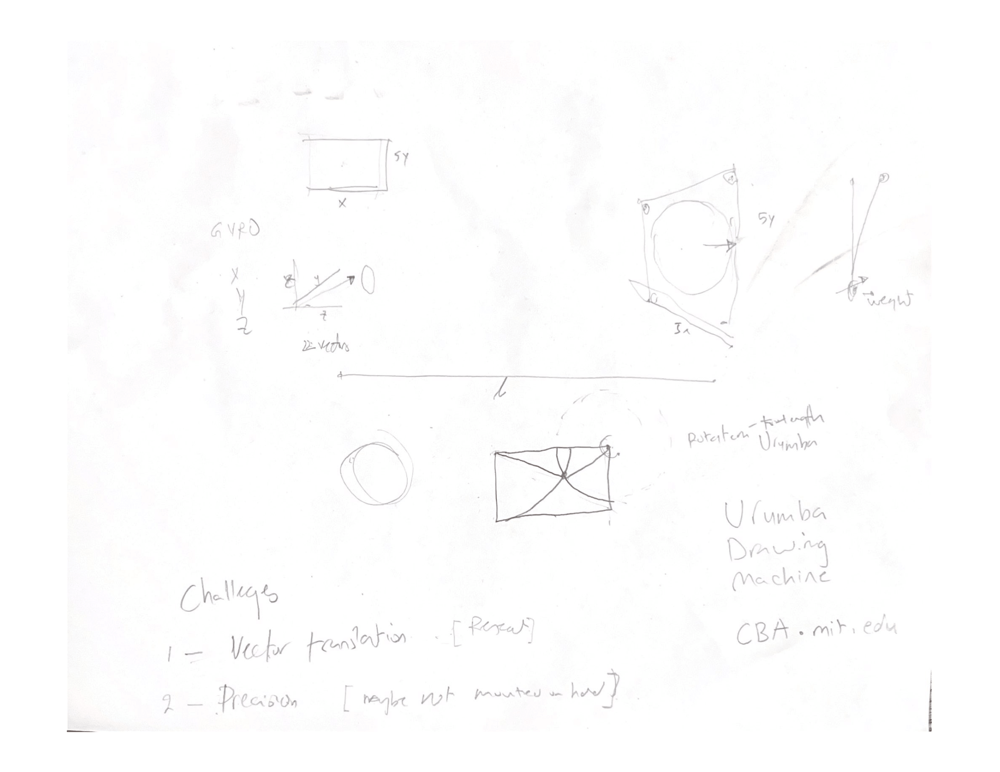

Fig 2. Planning with Ibrahim
Fig 2. Planning with Ibrahim

Fig 3. Drawing Apparatus Design V1
In the age of digital learning, some educators are struggling with managing the virtual aspects of their classrooms. Along with this, students are finding it difficult to collaborate with others, losing out on both the educative and social-emotional benefits that come from group work.
I believe that these problems would be greatly aided by a drawing machine that works with chalk. While I will only design a proof of concept, I can imagine a similar idea being used such that students and educators can draw on each other's chalkboards virtually. This will greatly improve their ability to work in groups as we adapt to the new age of education.
To begin, I have to choose which type of drawing machine I want to make. After looking at these precedents, I decided that I wanted to make a drawing machine that used cords with changing lengths for locomotion. These were some of the sketches Ibrahim and I made:
As you can see, this simplified into a fairly simple problem. Using basic trigonometry, I would be able to determine the two string lengths to move the chalk to a certain position (one can think of these lengths as radii of two intersecting circles).
.png)
One idea that changed from these sketches was my input device. While I originally planned on using a gyroscope, I eventually decided to use a capacitive touch matrix.
In Lesson 5 we learned about 3D design and printing. Anticipating my need for a chalk holder, I designed 3 hollow cylinders with different radii.


After printing these out, I was able to test them and find the right radius for my chalk holder.
I then began designing the final holder. This was how the design evolved.


In Lesson 6 we learned about input devices, including capacitive touch. I decided to use a capacitive touch matrix as my input device, and began designing one. This one worked as a rectangular matrix, and after doing some testing, did not work well.

I decided to make a new design using the knowledge I had gained from my first time around. This was the design I came up with.

As you can see, I have a tx plate on the back of my controller, with many rx pads on the front. Additionally, I have a ring connected to true ground going around the outside to let the device have even more knowledge about where my finger is.


While not an official part of my project, I took the week of this lesson to learn how to use stepper motors. This was how I wired them up (using the A4988 stepper motor driver).

And this was the code I used to drive it.
As you can see I was able to do microstepping fairly easily. I chose not to use any libraries for this task as well, opting to control steps manually.
In Lesson 9 I made use of ESP-NOW to communicate via radio between two ESP32s. This allowed me to use one ESP for input and another for output. The input ESP was able to do the calculations to determine string lengths, while the output ESP could drive the stepper motors.
This process is fully documented in Lesson 9.
First, I began working on my output device. I started by designing spools to go on the stepper motors.

Next, I used what I did in Lesson 7 to connect and drive two NEMA 17 stepper motors.
After this, I made some rough calculations of what I would need to do to move the chalk holder (Lesson 5) to various coordinates. This can be seen in my drawings.
Here are some videos of tests I did.
And here are progressively more advanced drawings that the machine was able to make.
I would eventually return to this device, but for now I moved on to my input device.
To start, I used my matrix from Lesson 6.
I then wired all of the rx pads to analog pins, the tx pad to a digital pin, and the true ground ring to the ESP's ground.
Once I had this done, I wrote this program to determine which position the chalk should move to when I was touching different parts of the matrix.
Going back to my output device, I now needed to figure out how to mount this above the blackboard.
At first, I tried mouting all of the components to a wooden board.

However, Professor Melenbrink pointed out that it would be significantly more elegant if my device could operate at multiple dimensions. To achieve this effect, I decided to mount the motors to brackets which would be attatched to the blackboard. I first created a design to cut on the Wazer waterjet.

Next, I bent the brackets into shape.
I then attatched the motors and spools to them. This was how the final product looked.
I also attatched all my circuitry to a wooden board which was placed behind the chalkboard as well.

After wiring my project up, this was my how it all looked.
I then used code similar to that from Lesson 9. This gave me my final project.

Spool (.F3D)
Chalk Holder (.F3D)
Capacitive Touch Matrix (.DXF)
Bracket Net (.DXF)
Stepper Driver Code (.INO)
Coordinate Calculation (.INO)
Output Code (.INO)
Input Code (.INO)